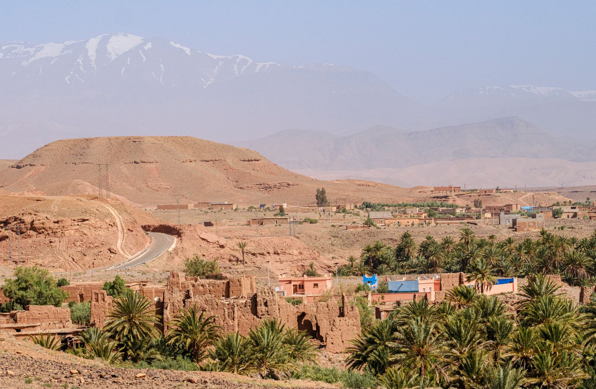
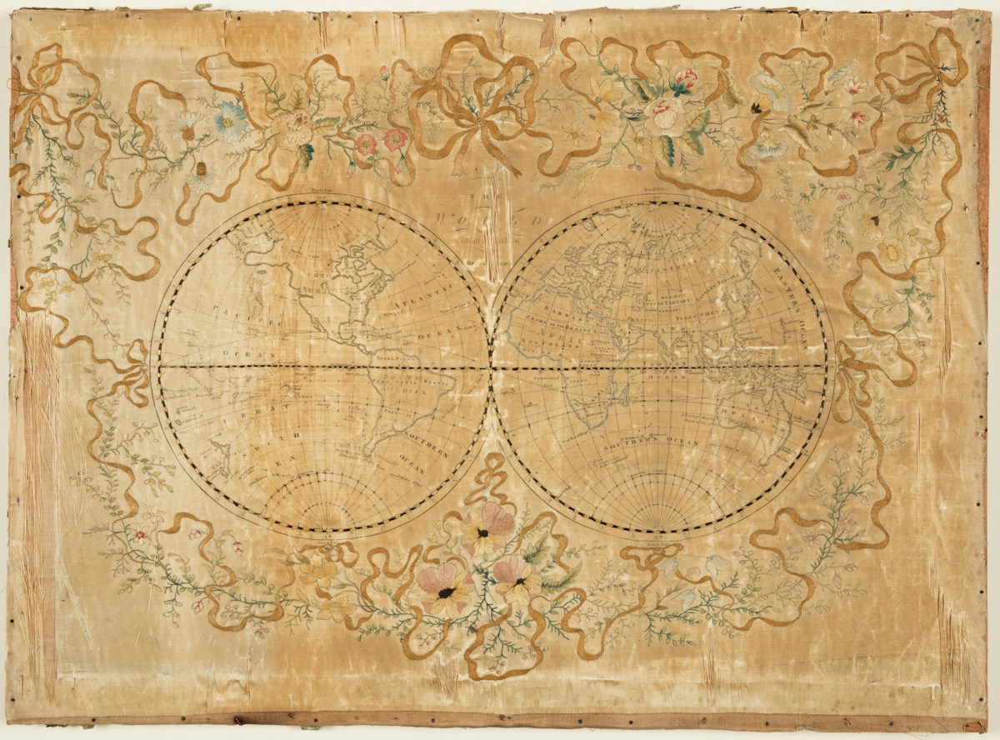
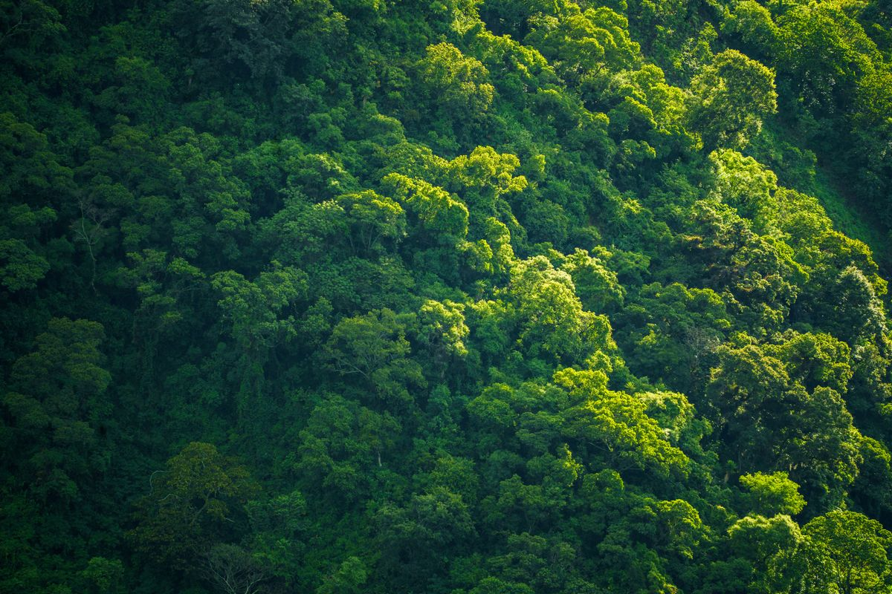

المعرفة تبدأ بسؤال
نقرأ العالم.
ونصنع درسًا
يستحق أن يُروى.
خلف كل خريطة حكاية، وخلف كل درس تحضير.
دروس التاريخ والجغرافيا وأدوات الأستاذ،
في مساحة واحدة تُلهمك وتُعينك.


بين الزمان والمكانرحلة في الاكتشافاتالجغرافيةاستكشف الدرس THE ATLAS EDIT / 01
في خدمة الأستاذ
وقت أكثر للتدريس.
وتفاصيل أقل تشغلك.
اختر الأداة المناسبة لمهمتك. لكل أداة مساحة عمل
مستقلة، من أول تعديل إلى آخر معاينة.
جذاذة على مقاس درسك.
الأهداف، الوضعيات، أنشطة التعلّم والتقويم.
قالب مرن تملؤه برؤيتك التربوية.
رؤية واضحة لسنتك.
وزّع الدروس على الأسابيع، واضبط العطل
ومواعيد الحصص وفق إيقاع قسمك.
للمعرفة أكثر من مدخل.
مفاهيم وإشكاليات ومسارات تعلّم.
تصفّح موضوع الدرس، ثم انطلق في تحضيره.
من مكتبة أطلس
افتح درسًا.
واكتشف زاوية جديدة.

نلاحظ. نتساءل. نفهم.لماذا أطلس؟
لأن الدرس الجيد
أكثر من معلومات.
هو سؤال يوقظ الفضول، ووثيقة تستدعي الملاحظة، ونقاش يصل المعرفة بالحياة. صُمّم أطلس ليجمع مواردك ومسار تحضيرك في مكان واضح.
المادة في سياقهامن الإشكالية إلى النشاط، ثم التقويم.
الأستاذ صاحب القرارقوالب قابلة للتعديل، ومسودات تُراجع قبل اعتمادها.
من الشاشة إلى الورقمعاينة مستقلة وتنسيق مهيأ للطباعة بصيغة PDF.
قبل أن تبدأ
أسئلة في محلّها.
تفاصيل صغيرة تجعل البداية أسهل.
هل يمكن تعديل الجذاذة بعد إنشائها؟+
نعم. يمكنك تعديل بيانات الدرس والأهداف ومراحل الحصة، وإضافة الأنشطة أو حذفها. تتحدث المعاينة مباشرة، ويمكن حفظ مسودة على هذا المتصفح للعودة إليها.
كيف أحصل على نسخة PDF؟+
داخل صفحة الجذاذة أو التوزيع، اضغط «طباعة / حفظ PDF». في نافذة الطباعة اختر «حفظ بصيغة PDF». يُصدَّر محتوى الوثيقة وحده دون قوائم الموقع.
هل التوزيع الزمني مطابق تلقائيًا للمقرر الرسمي؟+
الأداة تنظّم الدروس التي تدخلها حسب تاريخ البداية والأسابيع والعطل التي تحددها. النموذج المقترح مسودة عمل، وليس تقويمًا رسميًا؛ راجع المقرر الوزاري والمنهاج المعتمد قبل اعتماده.
ما الذي تتضمنه مكتبة الدروس حاليًا؟+
تضم درس الولايات المتحدة الأمريكية للثالثة إعدادي بنصوص الملف الأصلي ووثائقه المعاد تنظيمها، إضافة إلى خمس بطاقات تقديم وتحضير لبقية الدروس.
خطوتك القادمة
درسك القادم يبدأ من هنا.
اختر موردًا تستلهم منه، أو ابدأ تحضيرًا يحمل بصمتك.